Settings
Open the settings with Settings, at the bottom of the sidebar (or Ctrl + ,). The Sections bar, on the
left, lists the 15 pages; each page groups its settings in cards.
Account

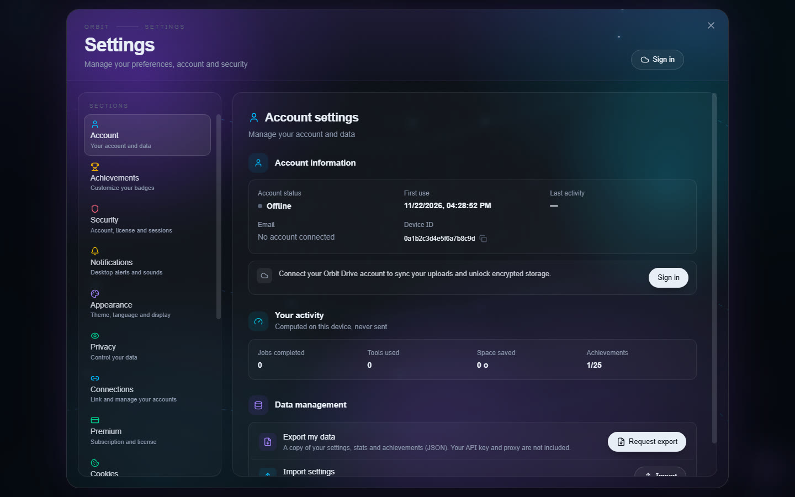
- Profile: your picture and Username, the same in the app and on orbit-drive.com. Change picture or take back the Google / Discord one.
- Account information: status, e-mail, first use, last activity, Device ID.
- Your activity: finished jobs, tools used, space saved. Computed on your PC, never sent.
- Data management: Export my data and Import settings (to move to another PC).
- Danger zone: Delete account erases your account and all its data (Drive, shares, picture, Premium). You must confirm with your password.
Achievements

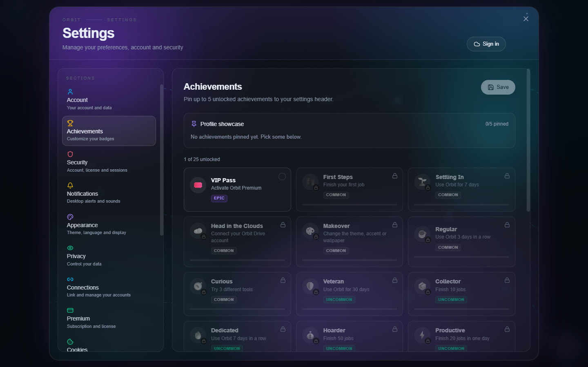
25 badges, from Common to Legendary, unlocked by using Orbit (finished jobs, days in a row, tools tried, space saved…). Nothing is sent. Pin up to 5 achievements in the Profile showcase, at the top of the settings.
Security

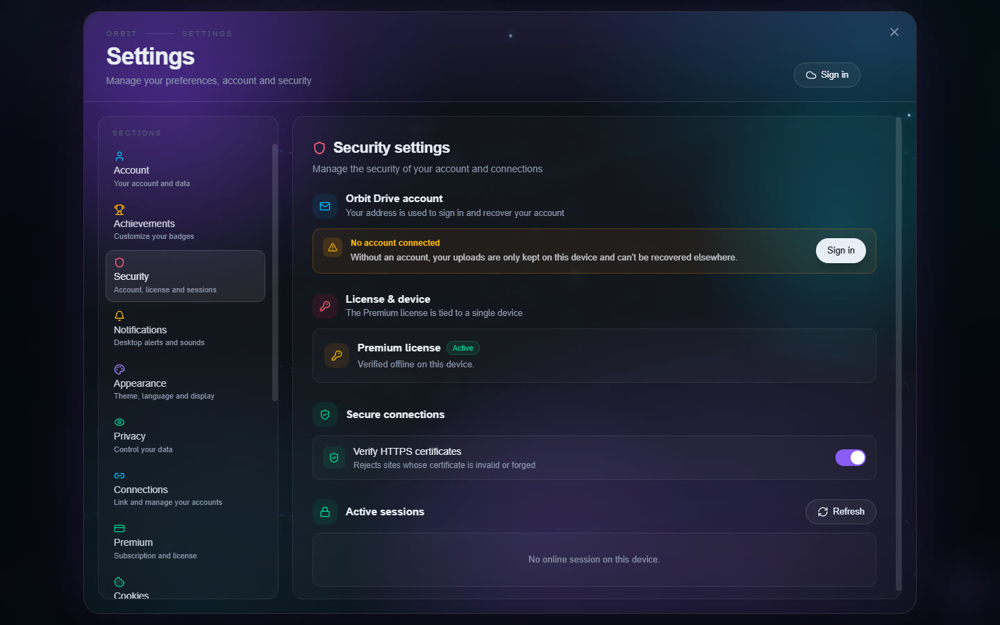
- Orbit Drive account: your address and the state of your Encrypted vault.
- License & device: the state of your Premium license, tied to a single device.
- Secure connections: Verify HTTPS certificates (keep it on; an alert shows up if it is off, with a button to turn it back on).
- Active sessions: each device signed in to your Drive or Telegram, Revoke to close one. Sign out of all devices closes every session (site, other PCs, browsers) except this one.
Notifications

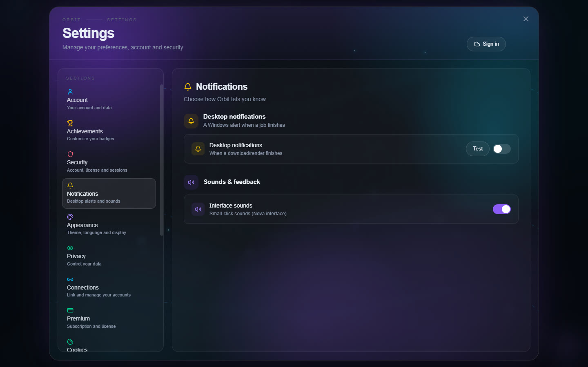
- Desktop notifications: a Windows alert when a download or a render finishes (Test to try it).
- Interface sounds: small click sounds.
Appearance

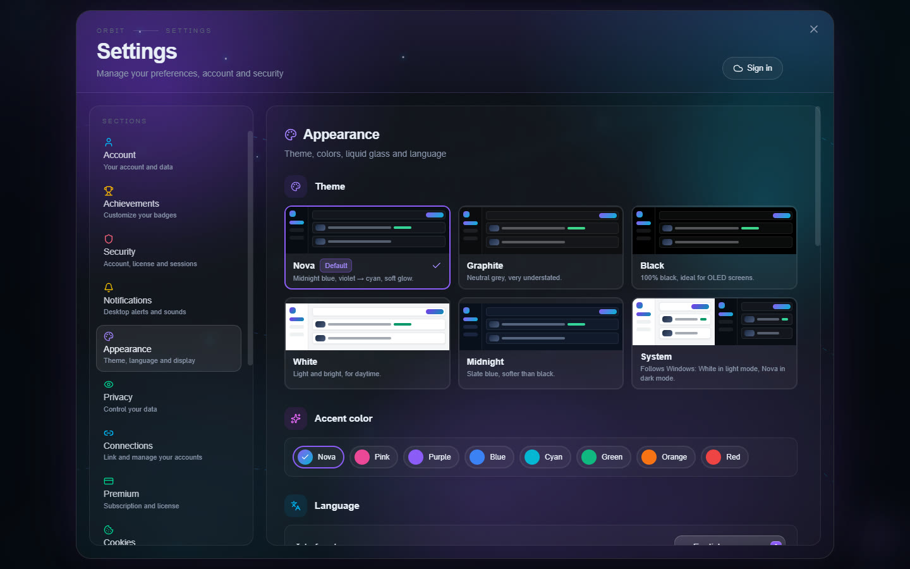
- Theme: Nova, Graphite, Noir, Blanc, Minuit, or System (follows Windows light/dark mode), and Accent color.
- Interface Language: French, English, Spanish, German, Italian, Portuguese.
- Liquid glass (Apple style): real refraction on the edge of panels and cards. Subtle, Apple, Intense or Custom presets, then fine settings (refraction, prism effect, blur, tint, highlights, mouse-following highlight, drop shadow), with a live preview.
- Wallpaper: an image behind the glass, with its blur and darkening; tool page blur, text shadow and brighter text keep text readable.
- Setup wizard: Relaunch to reorganize the tabs for your profile (editor, 3D, audio…).
- Reset puts the glass, wallpaper and text back to default.
Privacy

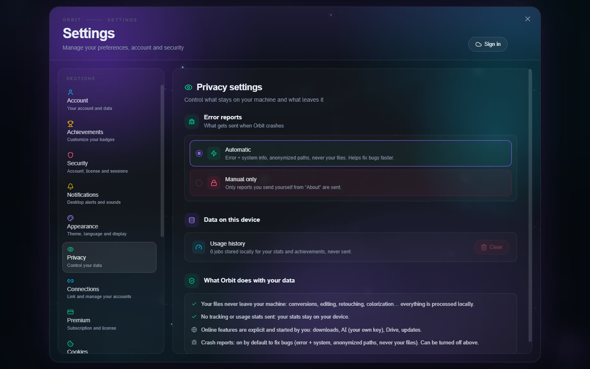
- Error reports: Automatic (sent when Orbit crashes, without your files or your user name) or Manual only (only the ones you send from About).
- Data on this device: the Usage history used for your stats and achievements, never sent; Clear to start over.
- What Orbit does with your data: a summary of what stays on your PC and what leaves.
Connections

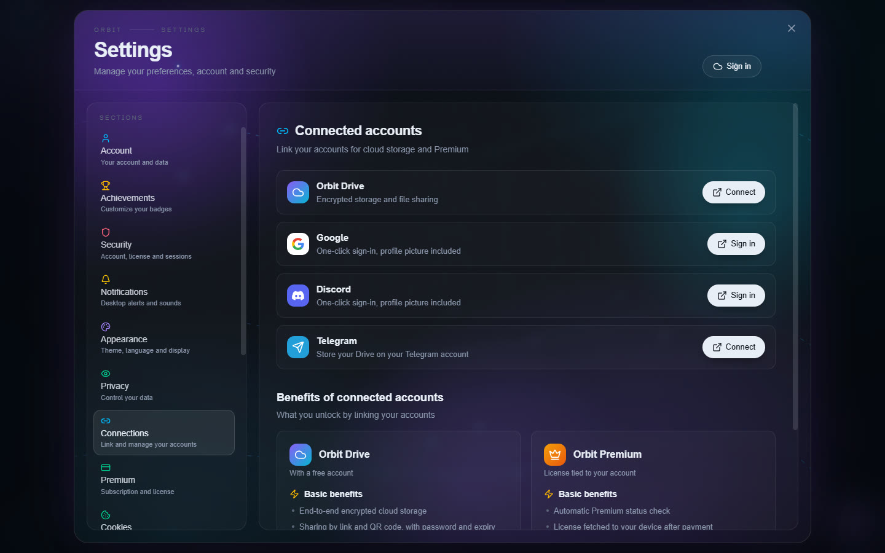
Link your accounts: Orbit Drive (encrypted storage and sharing), Google and Discord (one-click sign-in, profile picture reused), Discord (storage) for Local mode and Telegram to store the Drive on your account. Connect, Manage, Link or Unlink each one.
Premium

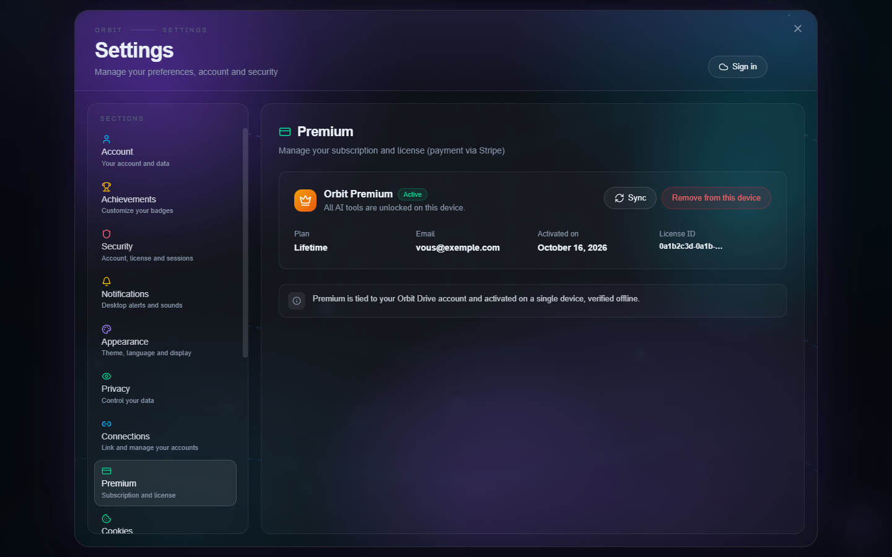
The state of your license (Active, Lifetime plan, activation date). Already paid: sync recovers a Premium paid on your account; Remove from this device frees it. See Orbit Premium.
Cookies

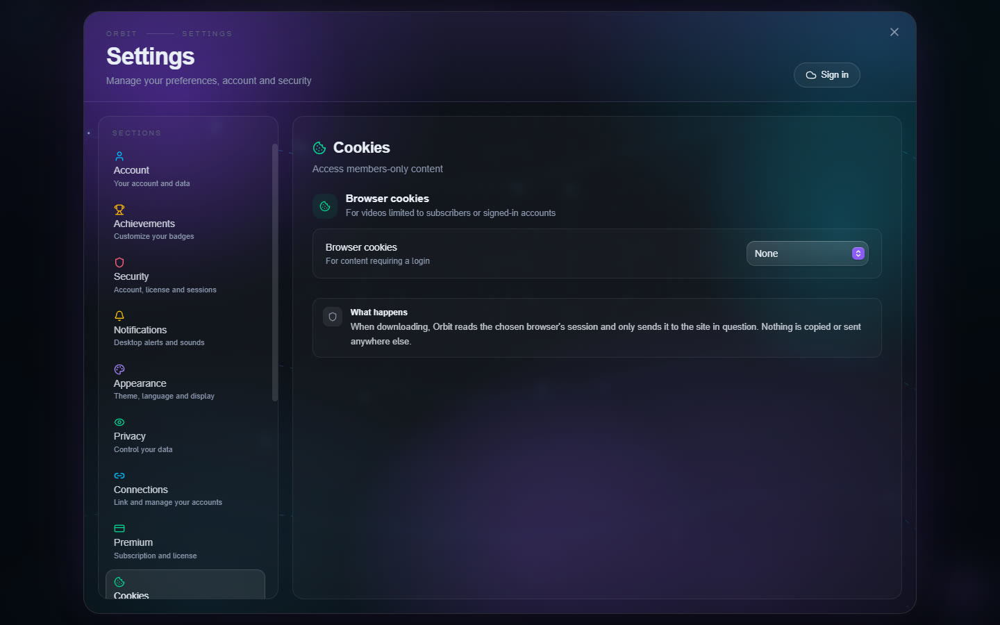
Browser cookies: Orbit reuses your browser's sign-in for videos reserved to subscribers or signed-in accounts.
Downloads

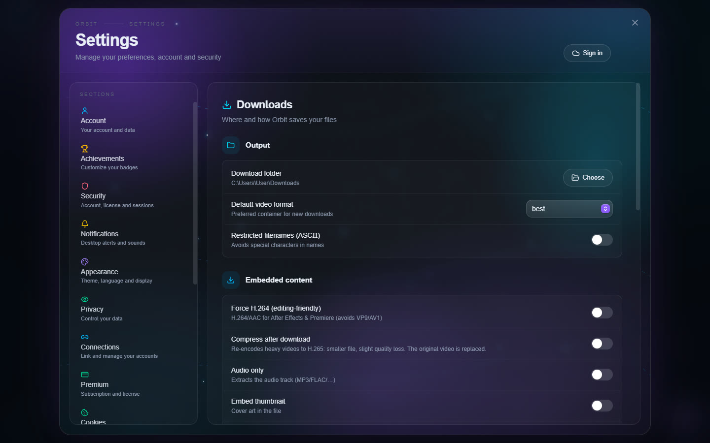
Output: Download folder, Default video format, restricted (ASCII) file names.
Embedded content:
- Force H.264 (editing-friendly): H.264/AAC for After Effects and Premiere, instead of VP9 or AV1;
- Compress after download;
- Audio only: keep only the sound (MP3, FLAC…);
- embed the thumbnail (cover), metadata (title, author, date), subtitles, chapters;
- auto-generated subtitles and subtitle languages (comma-separated codes, for example
fr.*,en.*); - write the .info.json;
- mark sponsor segments (SponsorBlock chapters) or remove sponsors (cuts intro, ads…).
Behavior:
- Download archive: never download again what was already downloaded;
- Ignore errors: keep going through a playlist if a video fails;
- keep the original timestamp, no .part files;
- Concurrent fragments: speeds up HLS and DASH streams;
- Speed limit: for example
5Mor800k(empty = unlimited); - Windows right-click menu: adds "Orbit ▸ Compress / Crop…" to the right-click menu of a file.
AI & Performance

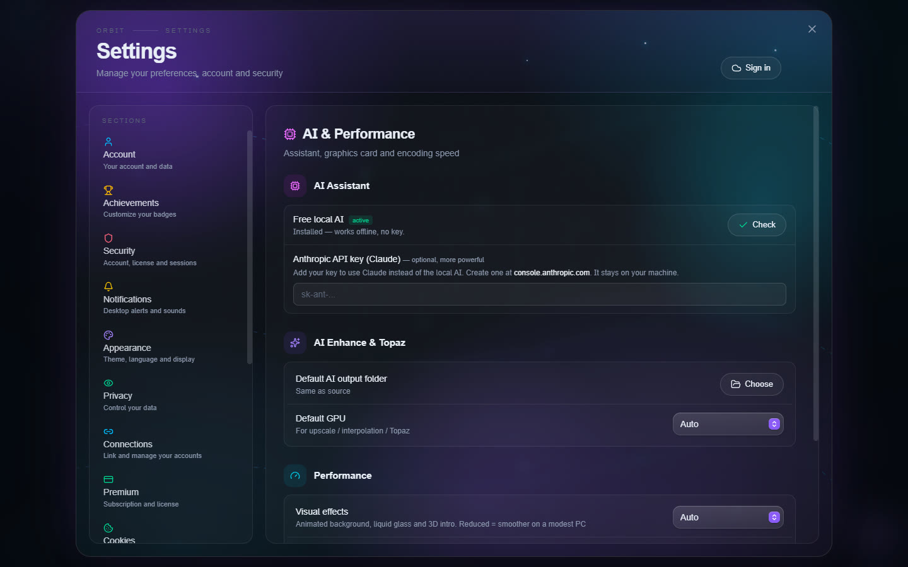
- AI Assistant: Free local AI (about 2 GB, downloaded once, works offline) or your Anthropic API key (Claude), more powerful. The key stays on your PC.
- AI Enhance & Topaz: Default AI output folder and Default GPU.
- Simultaneous AI jobs (GPU): how many AI tools use the graphics card at the same time. 1 (queue) is recommended.
- Maximum VRAM for AI: a video memory cap for AI engines, or Unlimited. Useful to keep room for a game or another program. When Orbit goes to the background, idle engines give their video memory back after 30 seconds.
- Performance:
- Visual effects: Auto, Full or Reduced (animated background, liquid glass, 3D intro). In Auto, Orbit lightens the effects on its own on a modest PC;
- Disable hardware acceleration if the interface flickers (restart required);
- Converter Video encoding: Auto (GPU if available), NVIDIA GPU (NVENC) or Processor (CPU);
- Max simultaneous downloads.
Modules

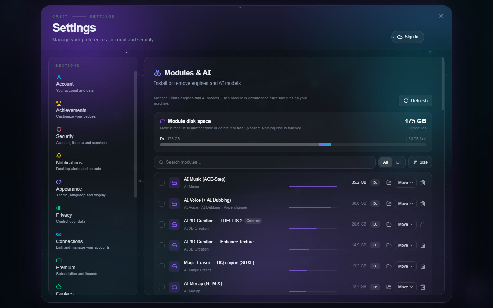
The list of every installed engine and AI model (yt-dlp, ffmpeg, local AI, Real-ESRGAN, RIFE, HandBrake, Magic Eraser, AI Voice, Mocap…), with their size and drive. Install, update, move to another drive or delete each one to free space; a module other modules depend on is flagged.
Network

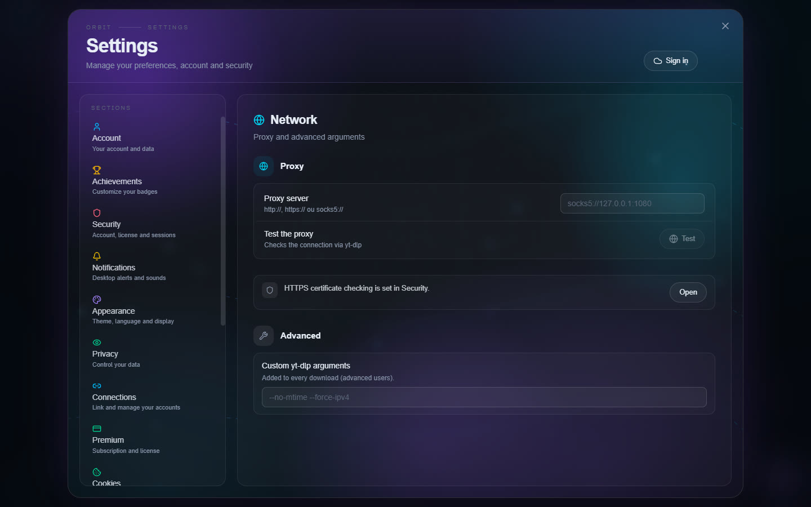
- Proxy server and Test the proxy (checks the connection through yt-dlp).
- Advanced: Custom yt-dlp arguments, added to every download.
System

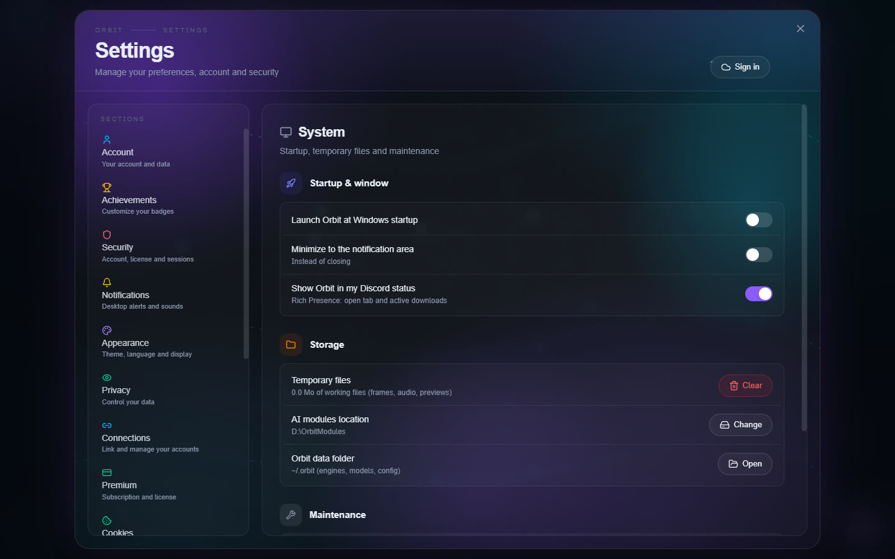
- Startup & window: Launch Orbit at Windows startup, Minimize to the notification area instead of closing, Show Orbit in my Discord status (open tab and running downloads).
- Storage: Temporary files (Clear button), AI modules location (choose the drive where modules install; Orbit asks before each install) and Orbit data folder.
- Maintenance: Re-install yt-dlp if downloads fail; JS engine for YouTube (Deno), which avoids the "no supported JavaScript runtime" error; View logs.
About

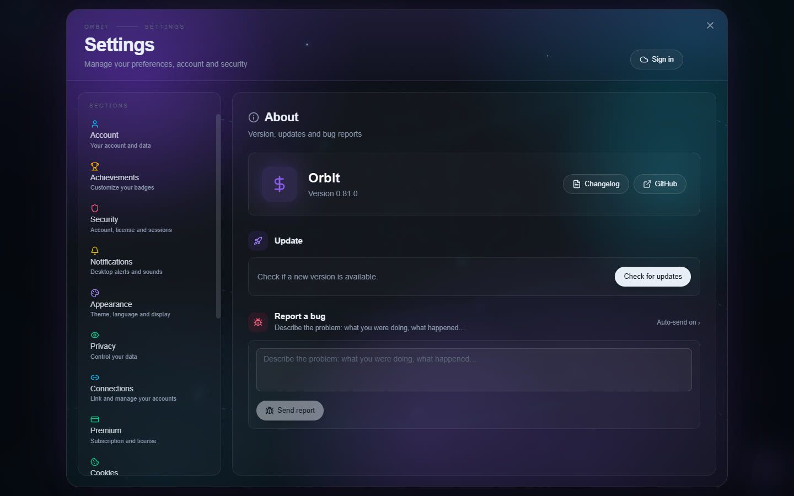
- Version and Check for updates.
- Report a bug: describe the problem and click Send report.